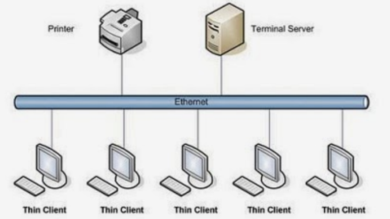
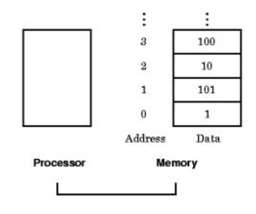

La computación paralela es una técnica que permite la ejecución simultánea de múltiples tareas o procesos,
con el objetivo de aumentar la eficiencia y reducir el tiempo de procesamiento. En lugar de realizar
operaciones secuenciales, la computación paralela divide un problema en subproblemas más pequeños que pueden
resolverse al mismo tiempo, utilizando múltiples unidades de procesamiento. Este enfoque es especialmente
beneficioso para aplicaciones que requieren gran capacidad de cálculo, como simulaciones científicas,
análisis de grandes volúmenes de datos y procesamiento de imágenes y gráficos. Los principales modelos de
computación paralela incluyen el procesamiento de datos paralelo (SIMD), donde múltiples datos son
procesados en paralelo usando la misma instrucción, y el procesamiento de tareas paralelo (MIMD), donde
diferentes tareas se ejecutan simultáneamente.

Existen varios tipos de computación paralela que se utilizan en diferentes contextos y escenarios. Algunos
de los enfoques más comunes incluyen el procesamiento paralelo a nivel de bit, a nivel de instrucción, a
nivel de datos y a nivel de tarea. Estos enfoques se diferencian en cómo se dividen y procesan las tareas y
los datos.
La clasificación de la computación paralela puede realizarse en función de la forma en que se dividen las
tareas y los datos, así como de la forma en que se coordinan y comunican los procesos paralelos. Algunas
clasificaciones comunes incluyen la computación paralela a nivel de bit, a nivel de instrucción, a nivel de
datos y a nivel de tarea.
La arquitectura de computadoras secuenciales, también conocida como arquitectura de von Neumann, es un
diseño fundamental en la ingeniería de computadoras donde las operaciones de procesamiento de datos y las
instrucciones se ejecutan de manera secuencial. Sus componentes principales incluyen la Unidad Central de
Procesamiento (CPU), que consta de la Unidad de Control (CU) y la Unidad Aritmético-Lógica (ALU), la memoria
principal, los buses de datos, direcciones y control, y los dispositivos de entrada/salida. En esta
arquitectura, las instrucciones y los datos se almacenan en la misma memoria y se ejecutan en un ciclo
secuencial de instrucción: Fetch (recuperar), Decode (decodificar), Execute (ejecutar) y Store (almacenar).
A pesar de su simplicidad y amplia utilización, especialmente en dispositivos embebidos y sistemas de
control, la arquitectura de von Neumann presenta ciertas limitaciones, como el cuello de botella de von
Neumann, donde la transferencia de datos entre la CPU y la memoria a través de un único bus puede limitar el
rendimiento del sistema. Además, la ejecución secuencial de instrucciones puede ser más lenta en comparación
con las arquitecturas paralelas, que pueden ejecutar múltiples instrucciones simultáneamente. Aun así, esta
arquitectura sigue siendo la base de muchos sistemas computacionales debido a su diseño intuitivo y fácil de
entender.
La organización de direcciones de memoria en un sistema informático se refiere a cómo se estructuran y
gestionan las direcciones para acceder a la memoria principal. En una arquitectura de von Neumann, la
memoria se organiza linealmente, con cada ubicación de memoria asignada a una dirección única y secuencial.
Este espacio de direcciones puede ser dividido en segmentos que separan las áreas de código, datos y pila,
facilitando la administración y protección de la memoria. Las direcciones de memoria son utilizadas por la
CPU para recuperar y almacenar datos durante la ejecución de programas, y su gestión eficiente es crucial
para el rendimiento y la estabilidad del sistema.

El sistema de memoria compartida es un modelo de arquitectura en el que múltiples procesadores tienen acceso
a un espacio de memoria común. En esta configuración, todos los procesadores pueden leer y escribir en la
misma memoria física, lo que facilita la comunicación y la sincronización entre ellos. Los sistemas de
memoria compartida son comunes en arquitecturas multiprocesador como SMP (Symmetric Multiprocessing), donde
cada procesador tiene acceso equitativo a la memoria. Este modelo permite que los procesadores compartan
datos y estados de manera eficiente, reduciendo la necesidad de intercambiar mensajes explícitos y mejorando
el rendimiento en tareas que requieren una colaboración estrecha entre núcleos de procesamiento.
Las redes de medio compartido son aquellas en las que múltiples dispositivos o nodos comparten el mismo
medio físico para la transmisión de datos. En este tipo de redes, todos los dispositivos conectados utilizan
un canal común, como un cable coaxial en Ethernet tradicional o una frecuencia de radio en redes
inalámbricas, para enviar y recibir información. Para evitar colisiones y gestionar el acceso al medio
compartido, se emplean protocolos como CSMA/CD (Carrier Sense Multiple Access with Collision Detection) en
redes Ethernet y CSMA/CA (Carrier Sense Multiple Access with Collision Avoidance) en redes Wi-Fi. Aunque son
simples y económicos de implementar, las redes de medio compartido pueden sufrir de problemas de congestión
y eficiencia a medida que aumenta el número de dispositivos conectados, limitando su escalabilidad y
rendimiento en entornos de alta demanda.
Las redes conmutadas son aquellas en las que los datos se transmiten a través de una serie de dispositivos
de conmutación, como routers o switches, que dirigen el tráfico de datos de manera eficiente entre el origen
y el destino. A diferencia de las redes de medio compartido, en las redes conmutadas, cada enlace entre
dispositivos puede ser utilizado de manera exclusiva por una conexión a la vez, lo que reduce las colisiones
y mejora el rendimiento.
Los sistemas de memoria distribuida son aquellos en los que cada nodo de procesamiento tiene su propia
memoria local, y los nodos se comunican entre sí a través de una red de interconexión. Este modelo contrasta
con los sistemas de memoria compartida, donde todos los procesadores acceden a un espacio de memoria común.
El procesamiento distribuido se ha convertido en un área de gran
importancia e interés dentro de la Ciencia de la Computación.
Interesa realizar investigación en la especificación,
transformación, optimización y evaluación de algoritmos
distribuidos y paralelos.
Esto incluye el diseño y desarrollo de sistemas paralelos, la
transformación de algoritmos secuenciales en paralelos, y las
métricas de evaluación de performance sobre distintas
plataformas de soporte (hardware y software).
Más allá de las mejoras constantes en las arquitecturas físicas
de soporte, uno de los mayores desafíos se centra en cómo
aprovechar al máximo la potencia de las mismas.